Venta rápida y táctil
Busca por nombre o código de barras, toca las tarjetas de producto y cobra con F12. Categorías, fotos y cantidades en un toque.
Quinde POS es un punto de venta con facturación electrónica del SRI incluida: vende rápido, cuadra tu caja y emite facturas sin pagar licencias ni programas aparte. Funciona en tu computadora, con o sin pantalla táctil.
Instalador para Windows 10 y 11 con Java y base de datos incluidos · Código abierto GPL v3
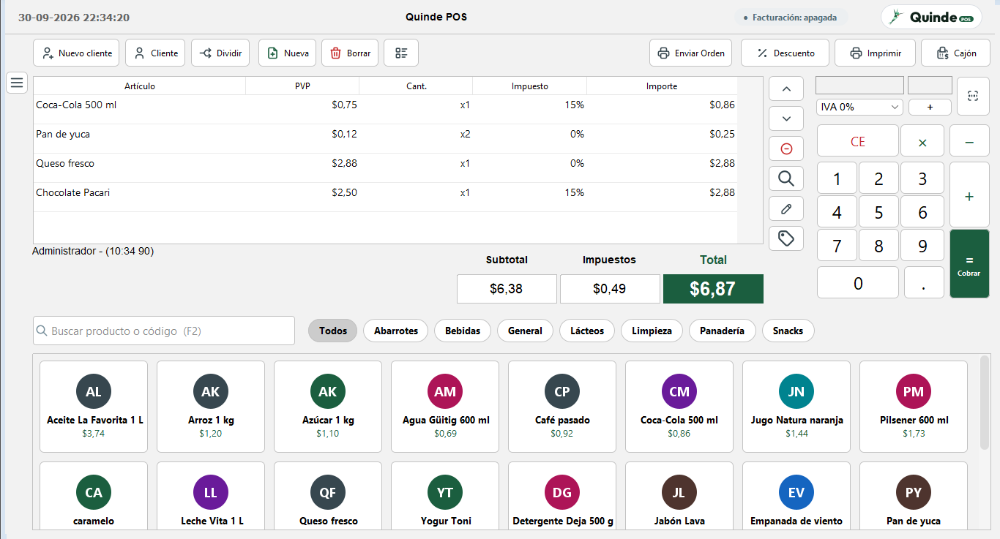
Desde la primera venta del día hasta el cierre de caja y la declaración del IVA.
Busca por nombre o código de barras, toca las tarjetas de producto y cobra con F12. Categorías, fotos y cantidades en un toque.
Billetes y monedas rápidos, botón Exacto, cambio en grande, pago dividido, tarjeta, transferencia y DeUna.
Factura y nota de crédito firmadas y autorizadas por el SRI, con el PDF enviado por correo al cliente.
Ventas de hoy contra ayer, ticket promedio, ventas por hora, lo más vendido y productos por agotarse.
2x1, 3x2, descuentos por producto o categoría y happy hour, aplicados solos al vender.
Cierre de caja con arqueo a ciegas, clave de supervisor para anular o descontar y registro de cada autorización.
Stock por almacén con alertas, historial de cada cliente, cuentas por cobrar y abonos.
Tickets térmicos, comanda de cocina, cajón de dinero, lector de códigos y visor de cliente.
Administrador, gerente, cajero e invitado, cada uno con sus permisos. Copia de seguridad automática diaria.
No necesitas otro programa ni pagar por comprobante: Quinde POS firma, envía y consulta la autorización por ti.
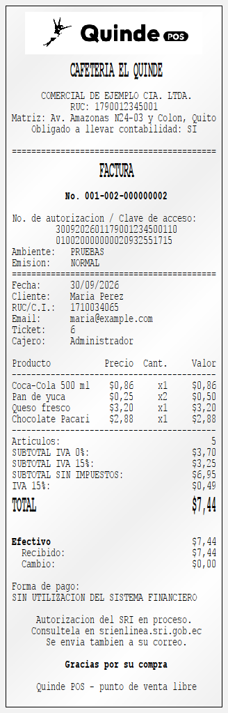
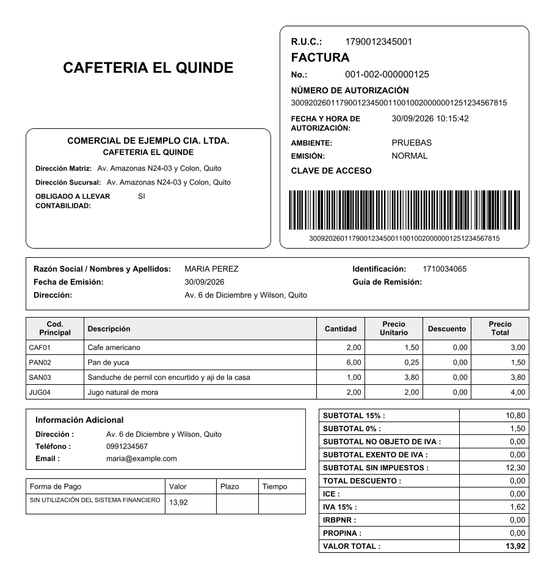
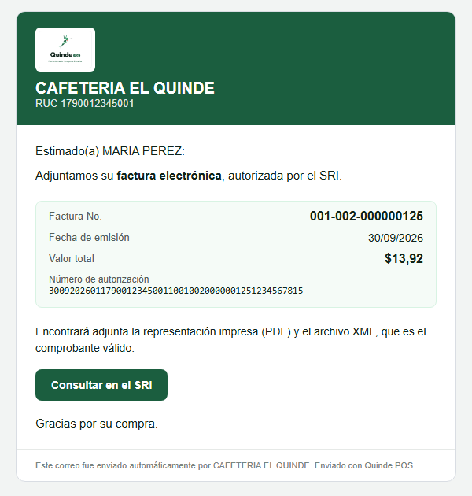
Tema claro y oscuro, íconos nítidos en cualquier pantalla y todo en español.
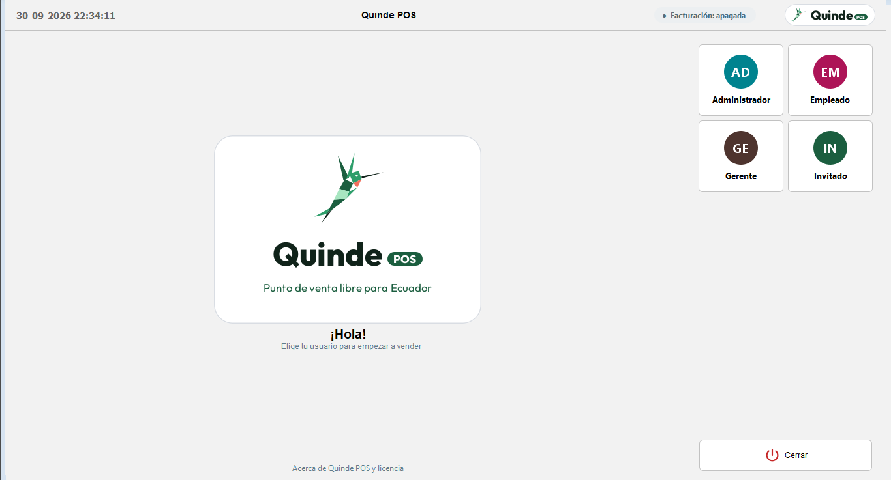
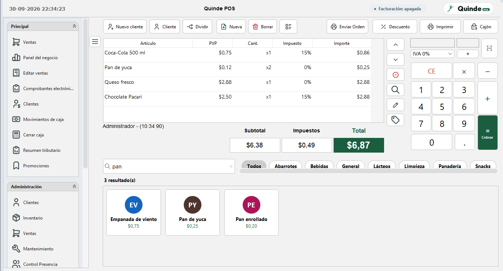
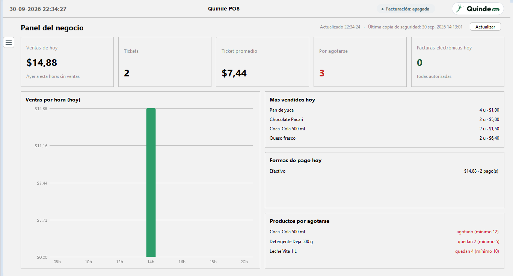
Las capturas usan un negocio y clientes de ejemplo.
Tiendas de barrio, cafeterías y restaurantes que quieren vender ordenado y facturar sin complicaciones.
La misma idea, ahora en el teléfono o la tablet: vendes, cobras y la factura del SRI se firma y se autoriza desde el mismo celular, sin computadora ni servidores.
Versión 1.0.0 · ¿Celular antiguo de 32 bits? Descarga esta versión.
Gratis para aprender en el ambiente de pruebas del SRI. Para emitir facturas reales se activa una licencia para el RUC de tu negocio: escríbeme al 098 318 5069. La app de Android no es software libre.
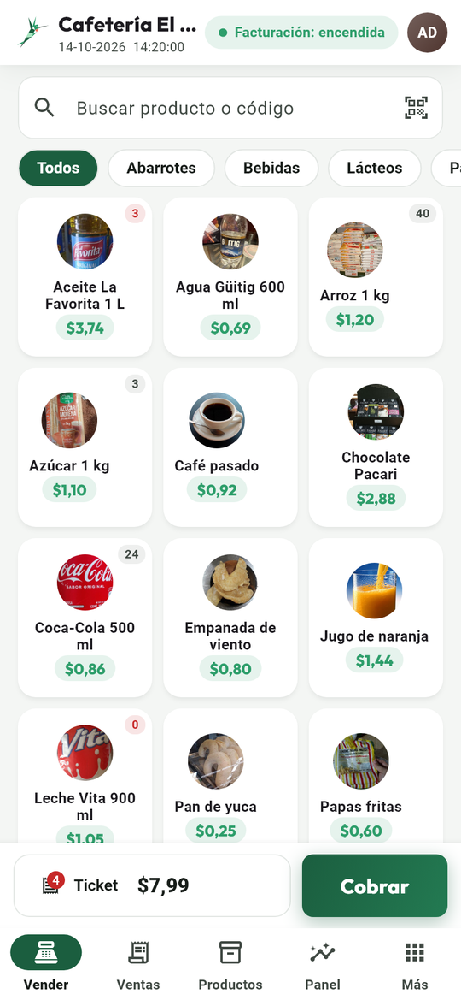
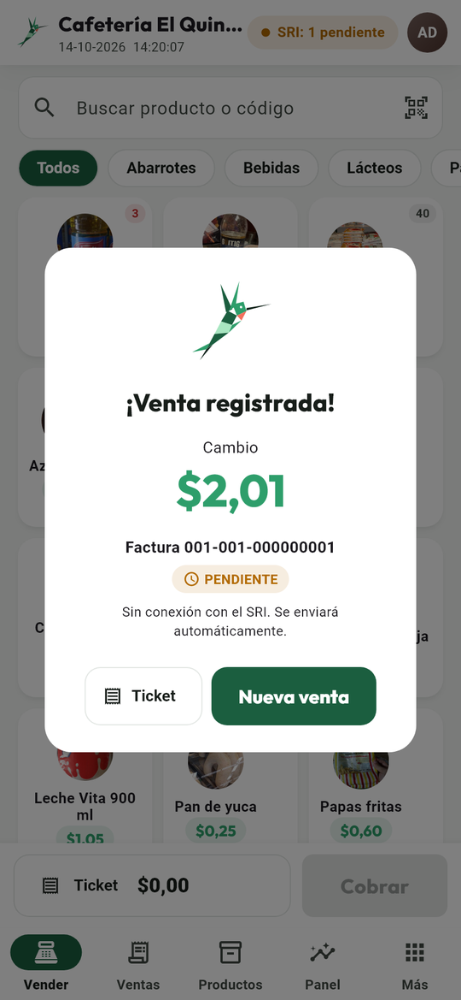
Un solo instalador y un asistente que te guía: en minutos estás vendiendo.
QuindePOS-Setup.exe para Windows 10 y 11. Trae Java y la base de datos: no instalas nada más.
Deja la base de datos incluida (recomendado) o conéctalo a tu servidor MySQL/MariaDB.
Tu negocio y logo, tipo de negocio, IVA, usuarios, impresora con ticket de prueba y productos (también desde Excel).
Con tu firma electrónica (.p12), en el mismo asistente o siguiendo la guía paso a paso.
El instalador aún no tiene firma digital: si Windows muestra «Windows protegió su PC», toca Más información → Ejecutar de todas formas.
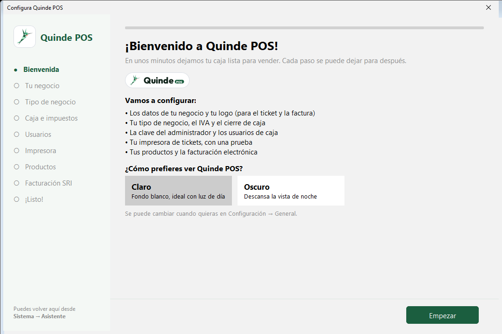
# Linux, macOS o para compilarlo desde el código (Java 11 + MySQL/MariaDB)
git clone https://github.com/RiccijandroUpec/QuindePOS.git
cd QuindePOS
ant -f build_working.xml todo # Quinde POS + facturación electrónica
start.bat # en Linux o macOS: ./start.sh
ant -f build_working.xml instalador # arma el instalador de Windows (Inno Setup)Java y Swing con un tema moderno, una base de datos MySQL/MariaDB y un módulo de facturación construido sobre los XSD oficiales del SRI, con pruebas automáticas.
Quinde es el colibrí en el Ecuador: pequeño, rápido y de aquí. La paleta "Selva" y la tipografía Outfit son parte del proyecto.
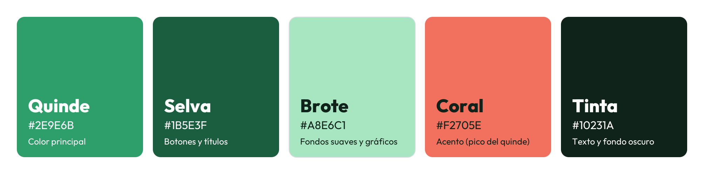
Sí. La versión para Windows es software libre (GPL v3): la descargas, la instalas y facturas sin pagar licencias, mensualidades ni costo por comprobante.
Sí. Genera el XML con los esquemas oficiales del SRI, lo firma con tu firma electrónica, lo envía y consulta la autorización. Imprime el ticket con la clave de acceso y manda el PDF (RIDE) y el XML al correo del cliente.
Tu RUC habilitado para facturación electrónica en el SRI y una firma electrónica en archivo .p12, que se obtiene con una entidad certificadora autorizada. Puedes practicar primero en el ambiente de pruebas del SRI.
Sí. Puedes vender y emitir comprobantes sin conexión; las facturas se envían solas al SRI cuando vuelve el internet.
Sí, hay una app para Android 7 o superior. Es gratis en el ambiente de pruebas del SRI; para emitir facturas reales desde el celular se activa una licencia para el RUC de tu negocio.
Para tiendas, minimarkets, ferreterías, restaurantes, panaderías, farmacias y cualquier negocio del Ecuador que venda en mostrador y necesite caja, inventario y facturación.
Quinde POS es software libre con licencia GPL v3: puedes usarlo, estudiarlo, modificarlo y compartirlo sin pagar nada.
Las ideas, reportes de errores y aportes de código son bienvenidos desde cualquier parte del Ecuador y del mundo.